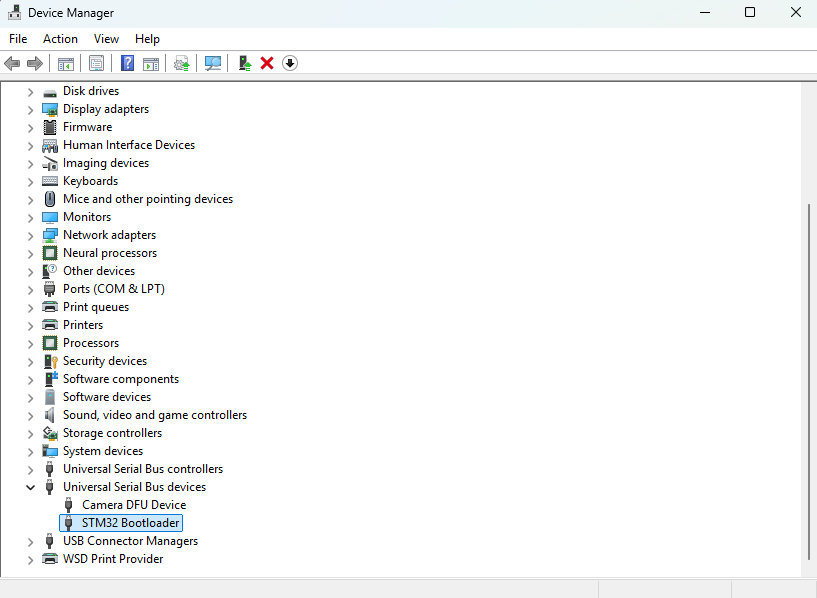
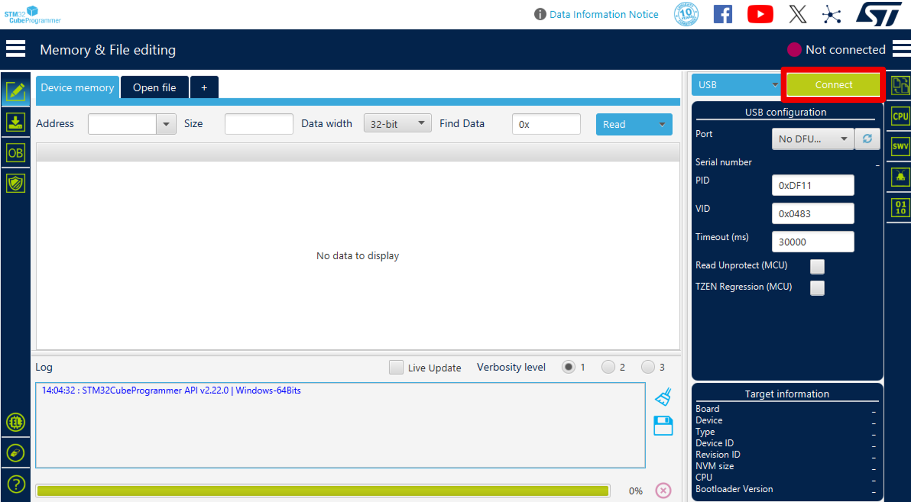
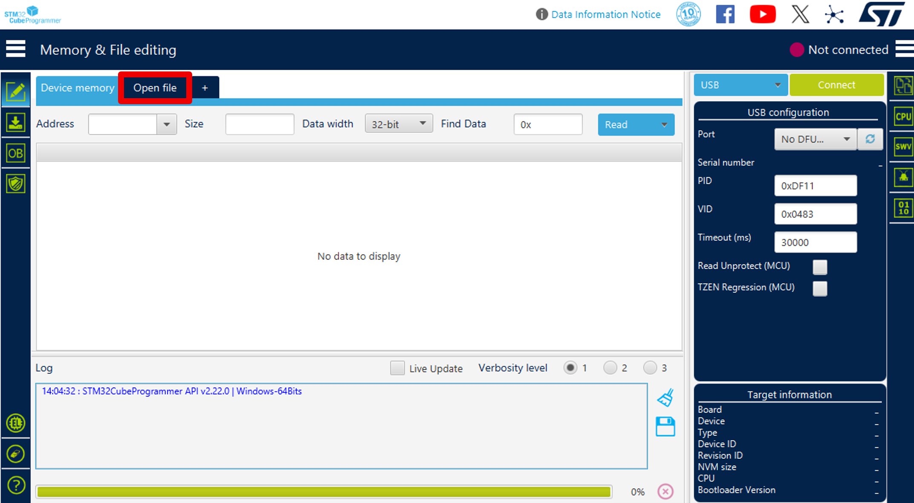
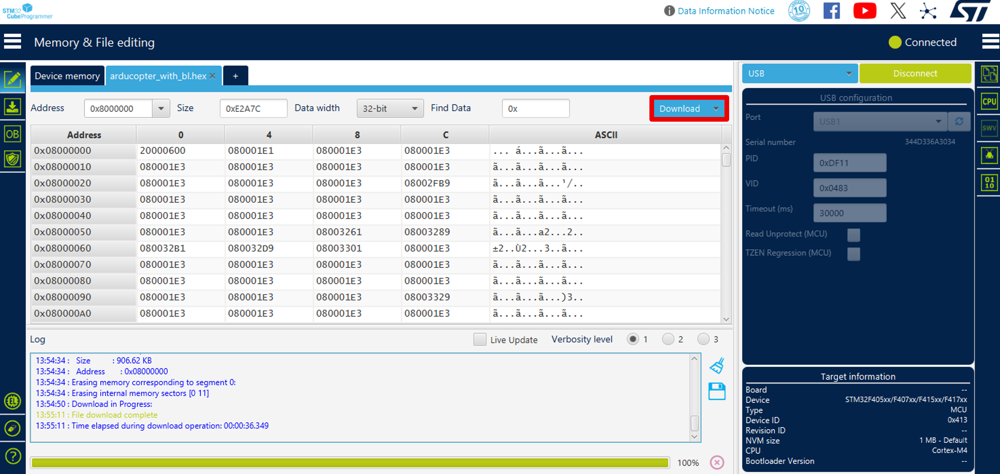
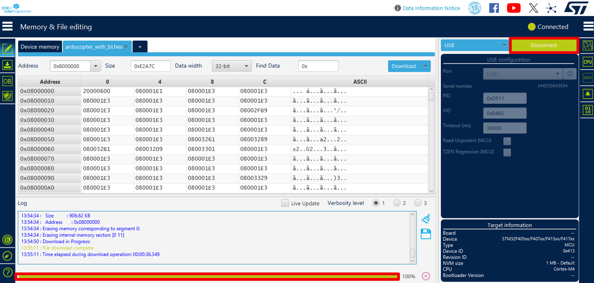
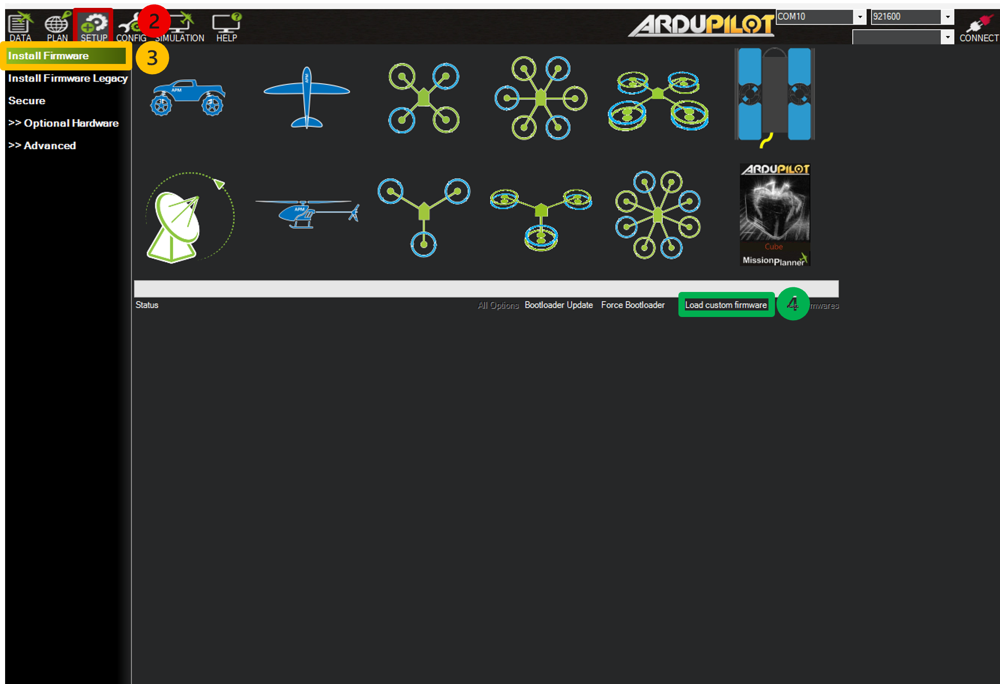

Installation
Build, compile, and flash ArduPilot firmware with OSCP IMU Products on Linux or Windows.
Development Environment
This integration is developed and tested on the following tools and platforms:
- Ubuntu 22.04 - Recommended development and build environment host used for compiling and testing firmware.
- Git - Source code version control and repository management.
- ARM GNU Toolchain - GCC-based toolchain for compiling ARM firmware.
- STM32CubeProgrammer - Firmware deployment tool for STM32-based flight controllers.
- Mission Planner - Ground control station for configuration and flight management.
- OSCP IMU Hardware - External IMU sensor unit for integration testing.
Prerequisites
Ubuntu Installation
This guide targets Ubuntu 22.04 LTS (Jammy Jellyfish). Download the Desktop image from the official Ubuntu releases page and install natively.
Update your package lists and install Git:
sudo apt-get update
sudo apt-get install git
sudo apt-get install gitk git-gui
WSL Installation
This guide targets Ubuntu 22.04 LTS (Jammy Jellyfish). Install WSL with an Ubuntu 22.04 LTS distribution via the command line.
Install the WSL distribution with the following command:
wsl --install -d Ubuntu-22.04
Restart your computer when prompted.
After restarting, launch Ubuntu from the Start Menu and complete the initial setup by creating a Linux username and password.
Verify that WSL is installed successfully:
wsl --status
Once Ubuntu has opened, update the package lists and install Git:
sudo apt-get update
sudo apt-get install git
sudo apt-get install gitk git-gui
Clone the OSCP ArduPilot repository with required submodules:
git clone --recurse-submodules https://github.com/OSCPS/oscp_ardupilot.git
cd oscp_ardupilot
Install the ArduPilot build dependencies:
Tools/environment_install/install-prereqs-ubuntu.sh -y
. ~/.profile
Restart your terminal or run:
source ~/.profile
Hardware Configuration
To ensure proper integration, the External AHRS (OSCP IMU) backend must be explicitly enabled in your flight controller's hardware definition.
Board Flash Size
These steps apply regardless of your board's flash size. Boards with 1 MB of flash have some features disabled by default to save flash.
The defines below ensure the OSCP backend remains compiled in, but you may need to disable other features to save flash for the External AHRS driver on 1 MB boards.
- Navigate to your target flight controller board's hardware definition directory:
libraries/AP_HAL_ChibiOS/hwdef/<BOARD_NAME>
Board Name
Use the directory path corresponding to your actual target flight controller board.
libraries/AP_HAL_ChibiOS/hwdef/Pixhawk6C-bdshot
-
Open the board's
hwdef.datfile. -
Append the following configuration block to the end of the file:
#------------------------------------------------
# External AHRS — OSCP IMU
#------------------------------------------------
define AP_EXTERNAL_AHRS_ENABLED 1
define AP_EXTERNAL_AHRS_BACKEND_DEFAULT_ENABLED 1
define AP_EXTERNAL_AHRS_OSCP_ENABLED 1
define HAL_EXTERNAL_AHRS_DEFAULT 15
# EKF3 & External Navigation Support
define HAL_NAVEKF3_AVAILABLE 1
define EK3_FEATURE_EXTERNAL_NAV 1
Build the OSCP Custom Firmware
Configure the build for your target flight controller:
./waf configure --board <BOARD_NAME>
Board Name
Use the directory path corresponding to your actual target flight controller board.
./waf configure --board Pixhawk6C-bdshot
Build the OSCP firmware (ArduCopter shown below):
./waf copter
Build Cleanup
Standard builds are the default and recommended workflow. Use ./waf clean only if you encounter build issues or switch between development branches. For a full reset, use ./waf distclean.
The generated OSCP firmware will be located in:
build/<BOARD_NAME>/bin/
Board Name
Use the directory path corresponding to your actual target flight controller board and username.
oscp_ardupilot/build/Pixhawk6C-bdshot/bin
Flash the OSCP Custom Firmware
The following table outlines the appropriate flashing method based on the flight controller board's bootloader status.
| Board State | Bootloader | Firmware File | Flashing Tool |
|---|---|---|---|
| Already runs ArduPilot |
✅ | arducopter.apj |
Mission Planner |
| New board | ❌ | arducopter_with_bl.hex |
Mission Planner & STM32CubeProgrammer |
| Corrupted bootloader |
⚠️ | arducopter_with_bl.hex |
Mission Planner & STM32CubeProgrammer |
Why _with_bl.hex?
This file contains both the ArduPilot bootloader and the firmware, allowing you to install both in a single flash operation.
When you need this
Use this path only if the board has no ArduPilot bootloader or if the existing bootloader is corrupted and the board is no longer recognized by Mission Planner. This uses the STM32 ROM-level DFU bootloader and not the ArduPilot bootloader.
Enter STM32 DFU mode to flash the _with_bl.hex file. Refer to your flight controller hardware instructions for the specific DFU entry procedure.
Install dfu-util if not already available:
sudo apt-get install dfu-util
Verify the board has entered DFU mode:
dfu-util --list
Check the kernel log for USB device detection.
Open Device Manager
Expand Universal Serial Bus devices
Confirm the board appears as STM32 BOOTLOADER

Warning
If the device does not appear in either environment, disconnect the board and repeat/diagnose the DFU entry procedure.
Flash using STM32CubeProgrammer:
- Open STM32CubeProgrammer.
-
Click Connect to display the flight controller information.

-
Select Open file to locate the
arducopter_with_bl.hexfile:
build/<BOARD_NAME>/bin/arducopter_with_bl.hexBoard Name
Use the directory path corresponding to your actual target flight controller board.
oscp_ardupilot/build/pixhawk6c-bdshot/bin/arducopter_with_bl.hex -
Press Download to flash the image.

-
Wait until the progress bar reaches 100% as this indicates the firmware has been successfully installed.
-
Disconnect the software and proceed to Mission Planner.

Action Required: Complete Firmware Installation
Flashing via STM32CubeProgrammer only installs the bootloader. To complete the installation, you must switch to the Mission Planner tab and upload the custom
.apjfirmware.
When you need this
Use this path for routine firmware updates on a board that already has ArduPilot installed. This flashes over the existing ArduPilot bootloader, so no DFU mode is needed.
Installing Mission Planner on Linux
Mission Planner is designed for Windows. While Mono provides a way to run it on Linux, you may experience minor bugs. For a more reliable experience, consider using Windows.
-
Install the latest version of Mono:
sudo apt install mono-complete -
Download Mission Planner as a zip file from here.
-
Unzip the downloaded file to a directory.
-
Change to that directory and launch Mission Planner:
cd /path/to/missionplanner/ mono MissionPlanner.exe
Installing Mission Planner on Windows
Download the latest installer from here.
Flash using Mission Planner:
- Open Mission Planner.
- Navigate to Setup to access firmware installation options.
- Select Install Firmware to open the firmware selection screen.
-
Click Load Custom Firmware to browse for your custom
.apjfirmware file.
-
Browse to the generated firmware:
build/<BOARD_NAME>/bin/arducopter.apjBoard Name
Use the directory path corresponding to your actual target flight controller board.
oscp_ardupilot/build/Pixhawk6C-bdshot/bin/arducopter.apj -
Select the file and allow Mission Planner to complete the upload.
-
Reboot the flight controller once flashing is complete.
Successful Reboot
Disconnect and reconnect the flight controller to ensure a successful reboot.
Next Steps
Continue to Initialization for instructions on connecting and configuring your OSCP IMU in Mission Planner.